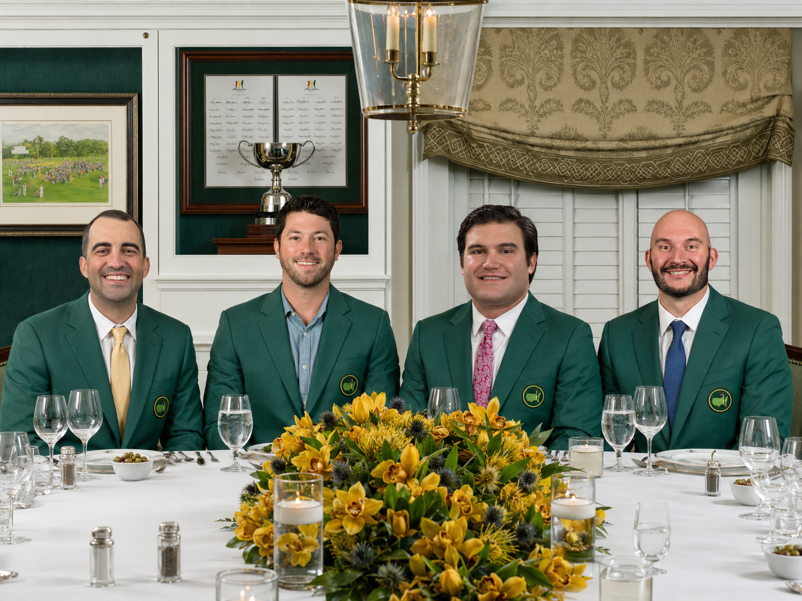

Branson, MO
Net Score (-3)The Hardware
Champions & Awards
Individual champions, closest-to-pin winners, long-drive kings, and SHOT Award records.
Green Jacket Club
BGW Individual Champion
Mesquite, NV
Net Score (-4)Myrtle Beach, SC
Net Score (-2)Kohler, WI
Net Score (E)
Pin Seekers
Closest To the Pin
- 2022 Karl Dubeau (4)
- 2023 Jared Powell (6)
- 2024 Jared Powell (4)
- 2025 Adam Miller (5)
Bomb Squad
Longest Drive
- 2022 Karl Dubeau* (4) — Tiebreaker win over Danny Peterson
- 2023 Jared Powell (10)
- 2024 Adam Miller (7)
- 2025 Adam Miller (5)
SHOT Award
SHOT Award
Score Honors Of the Trip — Low Gross Round
- 2022 Karl Dubeau (76 - Ozark National)
- 2023 Jared Powell (72 - Sand Hollow)
- 2024 Adam Miller (70 - True Blue)
- 2025 Adam Miller (73 - Blackwolf Run, River)